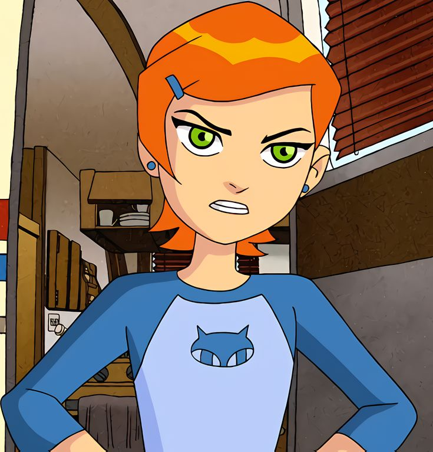

Nome completo:Gwendollyn Tennyson.
Idade:
10 anos
Gwendollyn Tennyson é a prima de ben, o protagonista.
É uma menina inteligente, estudiosa e tem interesse em magia e misticismo.
Conheça a dubladora da Gwen